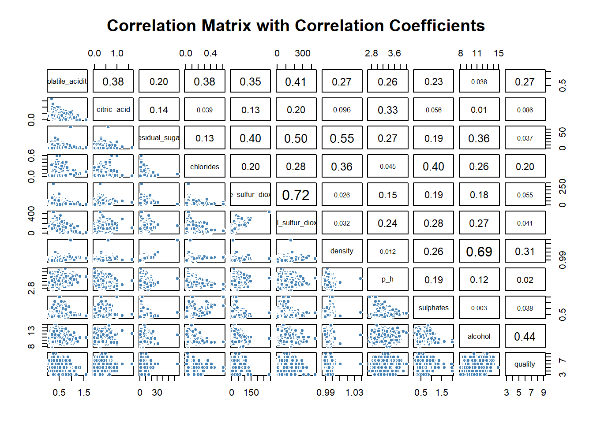
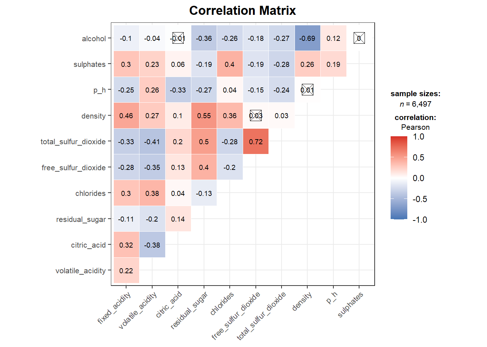
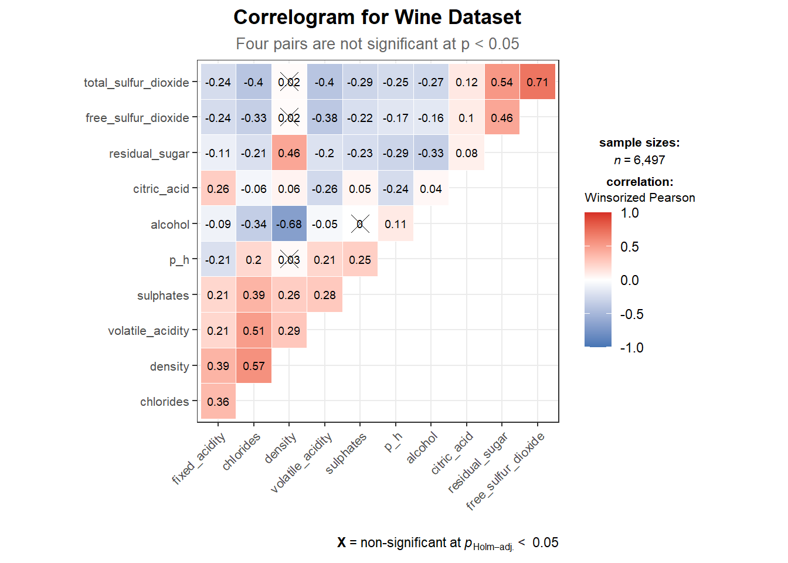
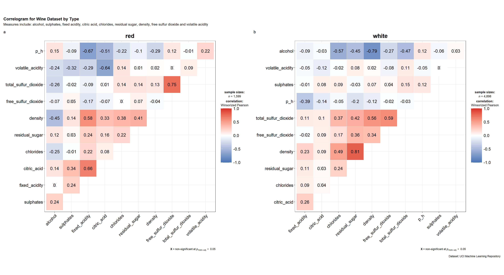
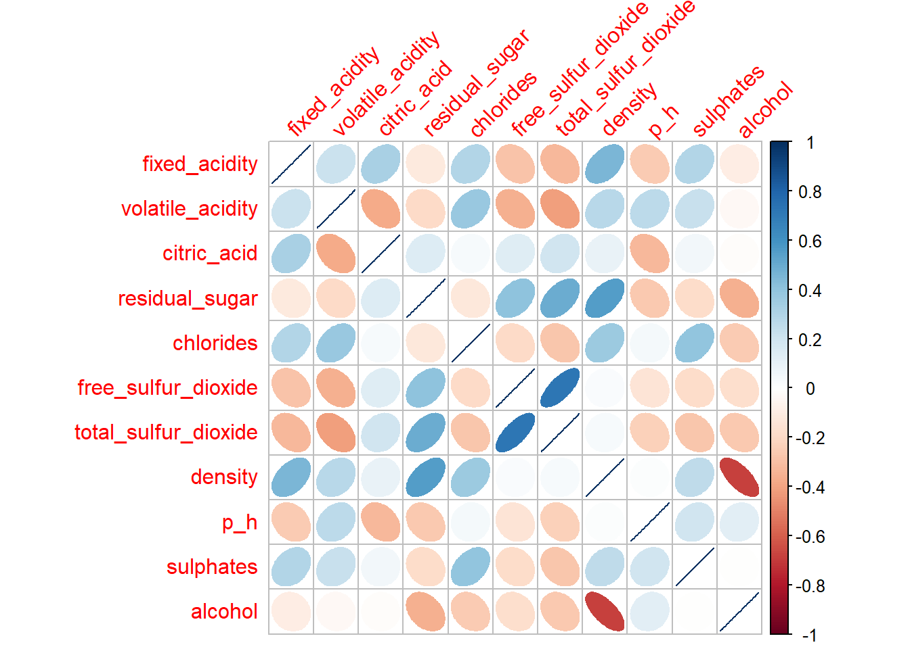
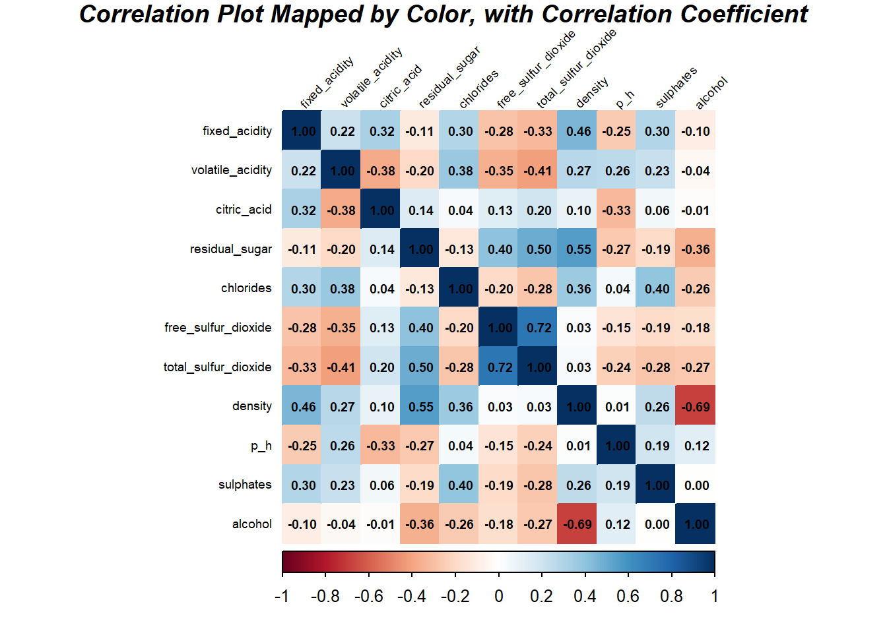
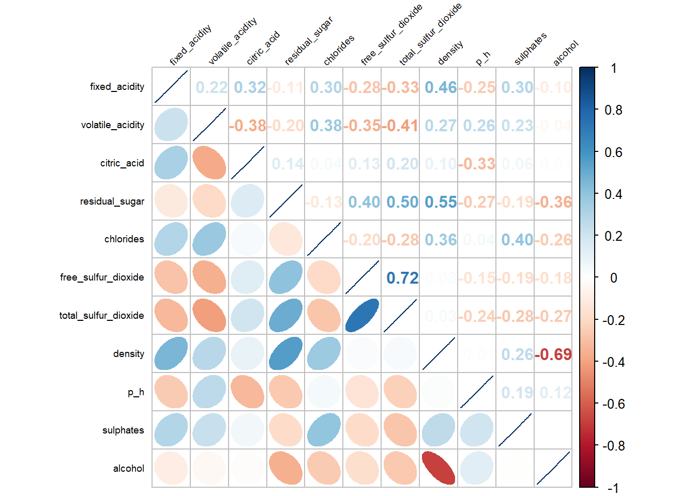
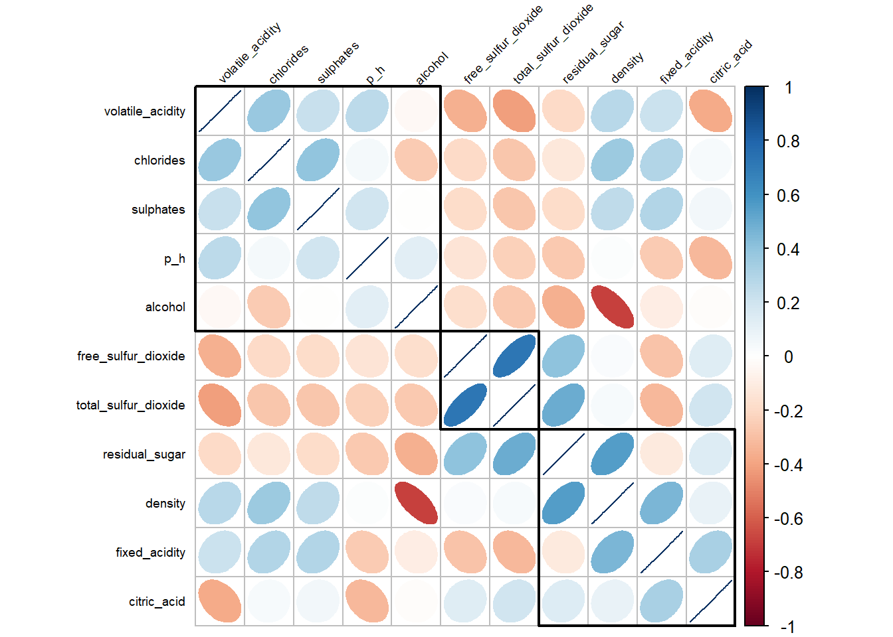
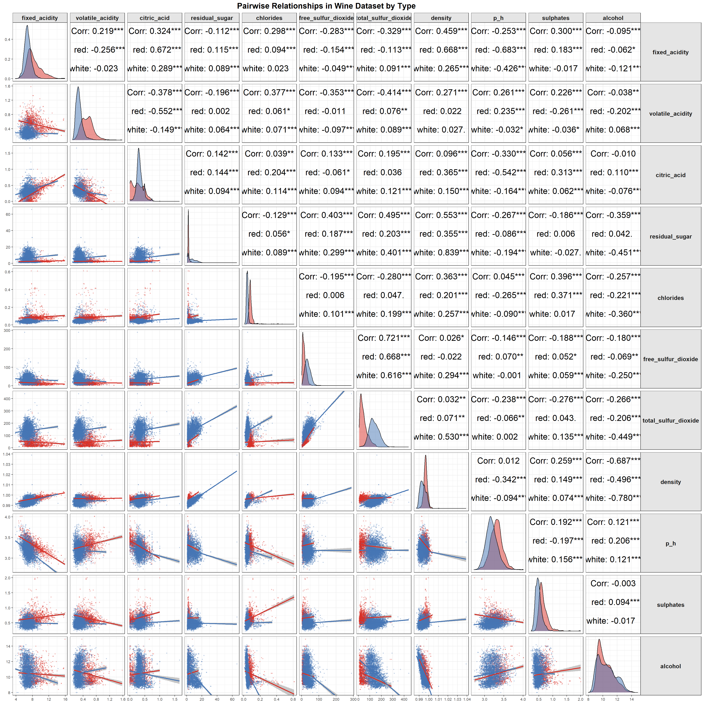

Show the code
pacman::p_load(corrplot, ggstatsplot, tidyverse, ggplot2, corrgram, ellipse, "GGally")Andy Tai
May 9, 2026
May 10, 2026
A correlation coefficient is a commonly used statistical measure for assessing both the direction and strength of the relationship between two variables. Its values range from -1.0 to 1.0. A value of 1.0 indicates a perfect positive linear relationship, whereas a value of -1.0 represents a perfect negative linear relationship. A value of 0.0 suggests that there is no linear relationship between the variables.
When working with multivariate data, the correlation coefficients from pairwise comparisons are often presented in the form of a correlation matrix or a scatterplot matrix.
In this exercise, we will:
The code chunk below uses p_load() of pacman package to check if tidyverse packages are installed in the computer. If they are, then they will be launched into R.
In this hands-on exercise, we will use the Wine Quality dataset from the UCI Machine Learning Repository. The dataset contains 13 variables and 6,497 observations. For this exercise, the red wine and white wine datasets will be merged into a single data file.
Rows: 6,497
Columns: 13
$ fixed_acidity <dbl> 7.4, 7.8, 7.8, 11.2, 7.4, 7.4, 7.9, 7.3, 7.8, 7.5…
$ volatile_acidity <dbl> 0.700, 0.880, 0.760, 0.280, 0.700, 0.660, 0.600, …
$ citric_acid <dbl> 0.00, 0.00, 0.04, 0.56, 0.00, 0.00, 0.06, 0.00, 0…
$ residual_sugar <dbl> 1.9, 2.6, 2.3, 1.9, 1.9, 1.8, 1.6, 1.2, 2.0, 6.1,…
$ chlorides <dbl> 0.076, 0.098, 0.092, 0.075, 0.076, 0.075, 0.069, …
$ free_sulfur_dioxide <dbl> 11, 25, 15, 17, 11, 13, 15, 15, 9, 17, 15, 17, 16…
$ total_sulfur_dioxide <dbl> 34, 67, 54, 60, 34, 40, 59, 21, 18, 102, 65, 102,…
$ density <dbl> 0.9978, 0.9968, 0.9970, 0.9980, 0.9978, 0.9978, 0…
$ p_h <dbl> 3.51, 3.20, 3.26, 3.16, 3.51, 3.51, 3.30, 3.39, 3…
$ sulphates <dbl> 0.56, 0.68, 0.65, 0.58, 0.56, 0.56, 0.46, 0.47, 0…
$ alcohol <dbl> 9.4, 9.8, 9.8, 9.8, 9.4, 9.4, 9.4, 10.0, 9.5, 10.…
$ quality <dbl> 5, 5, 5, 6, 5, 5, 5, 7, 7, 5, 5, 5, 5, 5, 5, 5, 7…
$ type <chr> "red", "red", "red", "red", "red", "red", "red", …Use clean_names() from the janitor package — it automatically replaces spaces with underscores and cleans up all column names in one line: This converts all column names to lowercase with underscores, e.g.:
Let’s create the correlation martix using the pairs() approach in three simple steps. Click on each tab - (1) Correlation Matrix, (2) Lower Panel, (3) Correlation Coefficients - to see each of these steps:
Figure below shows the scatter plot matrix of Wine Quality Data.Let’s just use the first 11 columns as they are numerical floating point data.
Note that we can calibrate specific columns (variables) if we wish to:
We then visualise the lower panel by setting upper.panel = NULL. (If we wish to visualise the upper panel, we can set lower.panel=NULL).
To display the correlation coefficient for each pair of variables instead of scatter plots, the panel.cor function will be used. Higher correlation values will also be highlighted using larger font sizes.
The par("usr") function returns the coordinates of the current plotting region.
panel.cor <- function(x, y, digits = 2, prefix = "", cex.cor, ...) {
usr <- par("usr")
on.exit(par(usr))
par(usr = c(0, 1, 0, 1),
bg = "white") #<< white panel background
r <- abs(cor(x, y, use = "complete.obs"))
txt <- format(c(r, 0.123456789), digits = digits)[1]
txt <- paste(prefix, txt, sep = "")
if (missing(cex.cor)) cex.cor <- 0.8 / strwidth(txt)
text(0.5, 0.5, txt, cex = cex.cor * (1 + r) / 2, col = "black")
}
pairs(wine[, 2:12],
upper.panel = panel.cor,
main = "Correlation Matrix with Correlation Coefficients",
pch = 21,
bg = "steelblue", #<< point fill colour
col = "white", #<< point border colour
gap = 0.5,
cex.labels = 0.8)
One major limitation of a correlation matrix is that the scatter plots can become highly cluttered when the dataset contains a large number of observations, typically more than 500. To address this issue, the corrgram visualisation technique proposed by D. J. Murdoch, E. D. Chow, and Michael Friendly will be used.
Several R packages provide functions for plotting corrgrams, including:
In addition, some packages such as ggstatsplot also provide functions for creating corrgrams.
In this section, we will learn how to visualise a correlation matrix using the ggcorrmat() function from the ggstatsplot package.
Correlation Matrix vs Correlogram
A correlation matrix displays pairwise correlations between variables in their original order, making it straightforward to look up specific pairs. A correlogram goes a step further by reordering variables using hierarchical clustering, grouping highly correlated variables together — revealing hidden structure and patterns that a fixed-order matrix would not show.
| Feature | Correlation Matrix | Correlogram |
|---|---|---|
| Variable order | Original/fixed | Reordered by hierarchical clustering |
| Primary purpose | Look up specific correlations | Reveal structure and variable groupings |
hc.order |
FALSE (default) |
TRUE |
| Insignificant pairs | Marked with pch symbol |
Marked with pch symbol |
| Best used when | Variables have a natural order | Exploring unknown relationships |
ggstatsplot::ggcorrmat(
data = wine,
cor.vars = 1:11,
colors = c("#4575B4", "white", "#D73027"),
pch = "square cross",
ggcorrplot.args = list(
outline.color = "white",
tl.cex = 8,
lab_size = 2.5 #<< smaller coefficient text
),
title = "Correlation Matrix"
) +
theme_bw() +
theme(
plot.title = element_text(hjust = 0.5, face = "bold", size = 13),
legend.position = "right",
axis.text.x = element_text(angle = 45, hjust = 1, size = 8),
axis.text.y = element_text(size = 8)
)
ggstatsplot::ggcorrmat(
data = wine,
cor.vars = 1:11,
colors = c("#4575B4", "white", "#D73027"),
type = "robust",
ggcorrplot.args = list(
outline.color = "white",
hc.order = TRUE,
tl.cex = 8,
lab_size = 2.5 #<< smaller coefficient text
),
title = "Correlogram for Wine Dataset",
subtitle = "Four pairs are not significant at p < 0.05"
) +
theme_bw() +
theme(
plot.title = element_text(hjust = 0.5, face = "bold", size = 13),
plot.subtitle = element_text(hjust = 0.5, size = 10, color = "grey40"),
legend.position = "right",
axis.text.x = element_text(angle = 45, hjust = 1, size = 8),
axis.text.y = element_text(size = 8)
)
ggstatsplot provides a special helper function for grouped analysis: grouped_ggcorrmat(). This is merely a wrapper function around combine_plots(). It applies ggcorrmat() across all levels of a specified grouping variable and then combines list of individual plots into a single plot.
ggstatsplot::grouped_ggcorrmat(
data = wine,
cor.vars = 1:11,
grouping.var = type,
colors = c("#4575B4", "white", "#D73027"),
type = "robust",
p.adjust.method = "holm",
plotgrid.args = list(ncol = 2),
ggcorrplot.args = list(
outline.color = "white",
hc.order = TRUE,
tl.cex = 16,
lab_size = 5
),
ggplot.component = list(
theme_bw(),
theme(
plot.title = element_text(hjust = 0.5, face = "bold", size = 18),
plot.subtitle = element_text(hjust = 0.5, color = "grey20", size = 14),
axis.text.x = element_text(angle = 45, hjust = 1, size = 14, colour = "black"),
axis.text.y = element_text(size = 14, colour = "black"),
legend.position = "right",
legend.text = element_text(size = 13), #<< bigger legend text
legend.title = element_text(size = 14), #<< bigger legend title
legend.key.size = unit(1.2, "cm") #<< bigger legend keys
)
),
annotation.args = list(
tag_levels = "a",
title = "Correlogram for Wine Dataset by Type",
subtitle = "Measures include: alcohol, sulphates, fixed acidity, citric acid, chlorides, residual sugar, density, free sulfur dioxide and volatile acidity",
caption = "Dataset: UCI Machine Learning Repository"
)
)
to build a facet plot, the only argument needed is grouping.var.
Behind group_ggcorrmat(), patchwork package is used to create the multiplot. plotgrid.args argument provides a list of additional arguments passed to patchwork::wrap_plots, except for guides argument which is already separately specified earlier.
Likewise, annotation.args argument is calling plot annotation arguments of patchwork package.
Before we can plot a corrgram using corrplot(), we need to compute the correlation matrix of wine data frame.
In the code chunk below, cor() of R Stats is used to compute the correlation matrix of wine data frame.
corrplot() is used to plot the corrgram by using all the default setting as shown in the code chunk below.
By default, corrgrams are displayed using circular visual objects arranged in a symmetric matrix layout. The standard colour scheme adopts a diverging blue–red palette, where blue tones represent positive correlations and red tones represent negative correlations.
Colour intensity, also known as saturation, reflects the strength of the correlation coefficient. Darker shades indicate stronger linear relationships between variables, whereas lighter shades suggest weaker relationships.
A variety of options can be used to enhance the appearance and readability of the corrgram:
method — specifies the shape used to represent the correlation objects. Available options include “circle” (default), “square”, “ellipse”, “number”, “pie”, “shade”, and “color”.outline — adds a black border around correlation objects such as circles or squares.addgrid.col — controls the colour of the grid lines. Setting it to NA removes the grid lines.order — determines the ordering of variables in the matrix. By default, variables follow their original order in the dataset, although alternative arrangements may provide more meaningful insights. Supported methods include “AOE” (angular order of eigenvectors), “FPC” (first principal component), “hclust” (hierarchical clustering), and “alphabet”. When “hclust” is used, the clustering method can be specified via hclust.method.addrect — used together with “hclust” ordering to add rectangles representing hierarchical clusters.cl.* arguments — control the appearance of the colour legend.tl.* arguments — control the formatting and appearance of text labels.In the corrplot package, seven different visual geometries can be used to represent correlation values through the method parameter. These include "circle", "square", "ellipse", "number", "shade", "color", and "pie". The default option is "circle".
As demonstrated in the previous tab, corrplots are displayed using circles by default. However, this setting can be customised by specifying a different option in the method argument, as illustrated in the code chunk below.

We can convert this to a correlation plot, with styling using the following code.
corrplot(wine.cor,
method = "color",
sig.level = c(0.001, 0.01, 0.05),
insig = "label_sig",
addCoef.col = "black", #<< black coefficients
pch.col = "tomato",
font.main = 4,
mar = c(0, 0, 1, 0),
cl.pos = "b",
cl.ratio = 0.2,
tl.srt = 45,
tl.cex = 0.6,
tl.col = "black", #<< black axis labels
number.cex = 0.6,
bg = "white", #<< white background
col.lim = c(-1, 1),
title = "Correlation Plot Mapped by Color, with Correlation Coefficient")
corrplor() supports three layout types, namely: “full”, “upper” or “lower”. The default is “full” which display full matrix. The default setting can be changed by using the type argument of corrplot().
It is possible to design corrgram with mixed visual matrix of one half and numerical matrix on the other half. In order to create a corrgram with mixed layout, the corrplot.mixed(), a wrapped function for mixed visualisation style will be used.
Figure below shows a mixed layout corrgram plotted using wine quality data.

Note: The lower and upper arguments are used to specify the visualisation methods for different sections of the corrgram. In this example, the "ellipse" method is applied to the lower half of the corrgram, while the upper half is represented using numerical values through the "number" method.
The tl.pos argument controls the placement of the axis labels. Finally, the diag argument determines the visual representation displayed along the principal diagonal of the corrgram.
In statistical analysis, we are also interested to know which pair of variables their correlation coefficients are statistically significant.
With corrplot package, we can use the cor.mtest() to compute the p-values and confidence interval for each pair of variables.
We can then use the p.mat argument of corrplot function as shown in the code chunk below.
Matrix reordering plays an important role in uncovering hidden structures and patterns within a corrgram. By default, the variables in a corrgram are arranged according to their original order in the correlation matrix (“original”). This default arrangement can be modified using the order argument in corrplot().
The corrplot package currently supports four main ordering methods:
"AOE" — angular order of the eigenvectors, proposed by Michael Friendly (2002)."FPC" — ordering based on the first principal component."hclust" — ordering based on hierarchical clustering. The clustering approach can be further specified using the hclust.method argument, with options such as “ward”, “single”, “complete”, “average”, “mcquitty”, “median”, and “centroid”."alphabet" — alphabetical ordering of variables.Additional matrix reordering algorithms are also available in the seriation package
If using hclust, corrplot() can draw rectangles around the corrgram based on the results of hierarchical clustering. add_rect= specifies number of clusters.

Alternatively, we can amend this chart to show only the upper diagonal matrix and remove the addrect= parameter.
Although the base R pairs() function is simple to use, it offers limited flexibility and visual customisation compared to ggplot2. The GGally package extends ggplot2 by providing the ggpairs() function for creating more visually appealing and informative pairs plots.
We can also map a categorical variable to colour to differentiate groups within the scatter plots. In this example, the type variable, which indicates the wine type, will be used as the grouping variable.
ggpairs(
wine,
columns = 1:11,
mapping = aes(color = as.factor(type), alpha = 0.6),
upper = list(continuous = wrap("cor",
size = 6,
color = "black")),
lower = list(continuous = wrap("smooth",
alpha = 0.3,
size = 0.5)),
diag = list(continuous = wrap("densityDiag",
alpha = 0.5))
) +
scale_color_manual(
values = c("red" = "#D73027", "white" = "#4575B4"),
name = "Wine Type"
) +
scale_fill_manual(
values = c("red" = "#D73027", "white" = "#4575B4"),
name = "Wine Type"
) +
labs(title = "Pairwise Relationships in Wine Dataset by Type") +
theme_bw() +
theme(
plot.title = element_text(hjust = 0.5, face = "bold", size = 16),
strip.text.x = element_text(size = 12, face = "bold"),
strip.text.y = element_text(size = 12, face = "bold", angle = 0),
strip.background = element_rect(fill = "grey90"),
legend.position = "bottom",
legend.text = element_text(size = 12),
axis.text.x = element_text(size = 8, angle = 0, hjust = 0.5),
axis.text.y = element_text(size = 8)
)
```
lower = wrap("smooth") adds trend lines to scatter plots — reveals patternsdiag = wrap("densityDiag") shows density curves — better than histograms for comparisonscale_color_manual uses red/blue — directly meaningful for red vs white winestrip.background adds subtle grey headers for variable namesKam, T.S. (2023). Visual Correlation Analysis.
Michael Friendly (2002). “Corrgrams: Exploratory displays for correlation matrices”. The American Statistician, 56, 316–324.
D.J. Murdoch, E.D. Chow (1996). “A graphical display of large correlation matrices”. The American Statistician, 50, 178–180.